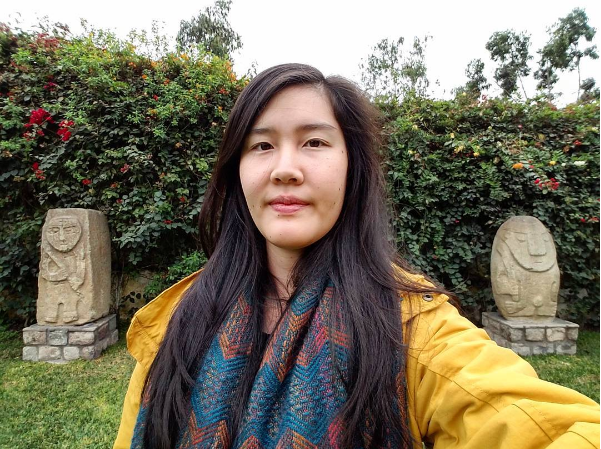

Diana Li is an artist who works in video, performance and installation. Her life and artwork are greatly influenced by her diasporic Chinese Peruvian American background and female identity. This complicated identity is one she cannot escape when asked where she's from and why her parents moved to the US.
In the process of artmaking, she became self-aware that she was researching and asserting her intersectional subjectivity through digital images and online platforms. Doing so, she found the multi-layered irony in researching, consuming and appropriating these images, whether they were photographed by herself or Googled online.
This archive is thus a giant growing list that both complicates and reclaims the stereotypical question posed toward exotified subjects, where are you from?